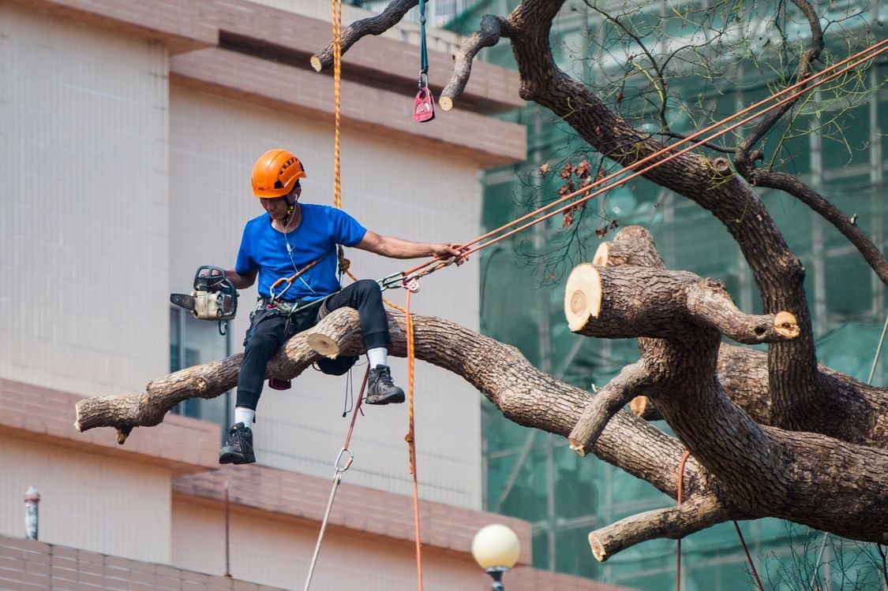
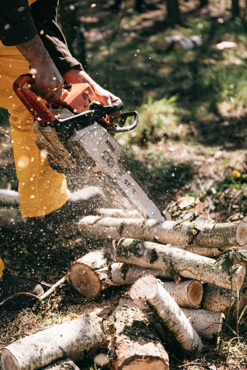

A tree service on the Mississippi Gulf Coast
Tree removal, trimming, and stump grinding in Long Beach
Bobcat Tree Work handles tree removal, tree trimming, stump grinding, and storm-damage tree work on the Mississippi Gulf Coast.
A tree service on the Mississippi Gulf Coast
Bobcat Tree Work handles tree removal, tree trimming, stump grinding, and storm-damage tree work on the Mississippi Gulf Coast.
Bobcat Tree Work sits at 8468 County Farm Rd in Long Beach. The crew handles tree removal, tree trimming, stump grinding, and storm-damage tree work.


8468 County Farm Rd, Long Beach, MS
Monday to Friday, 9:00 AM to 5:00 PM